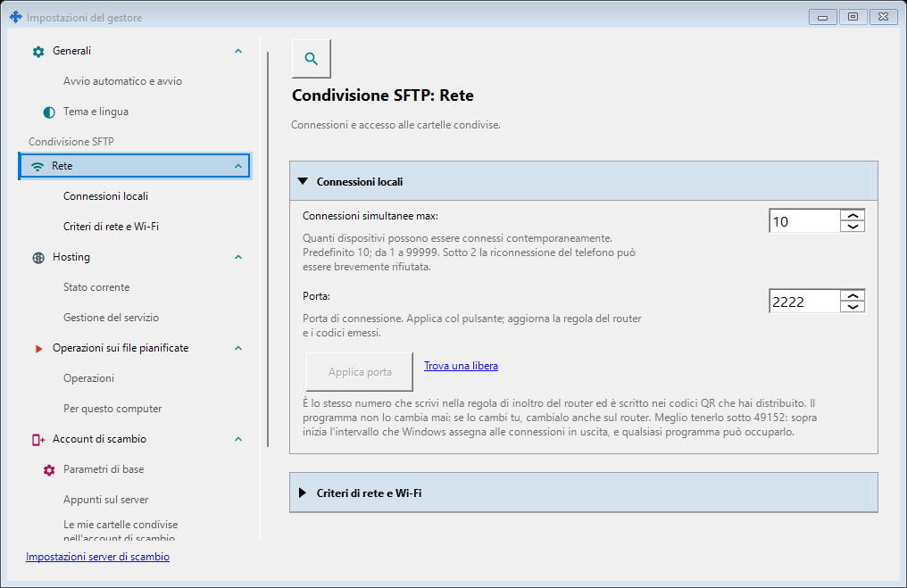
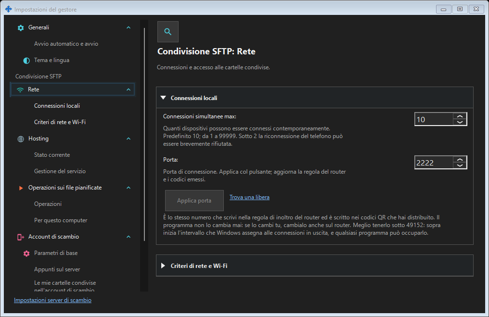

Impostazioni condivisione SFTP
Scopo
SFTP: porta, limite connessioni, rete locale e servizio Windows. Server di scambio: indirizzo, TLS, account, dispositivi, inviti, servizio, registri e amministrazione remota.


In questo ordine
La porta SFTP cambia solo con Applica. Cambiare finestra conserva la bozza. Alla chiusura: Sì applica, No scarta, Annulla continua. Gli errori conservano la bozza. Dopo il cambio aggiornare codici e inoltro sul router.
Gli elementi
Impostazioni condivisione SFTP
SFTP: porta, limite connessioni, rete locale e servizio Windows. Server di scambio: indirizzo, TLS, account, dispositivi, inviti, servizio, registri e amministrazione remota. La porta SFTP cambia solo con Applica. Cambiare finestra conserva la bozza. Alla chiusura: Sì applica, No scarta, Annulla continua. Gli errori conservano la bozza. Dopo il cambio aggiornare codici e inoltro sul router.
Impostazioni condivisione SFTP
SFTP: porta, limite connessioni, rete locale e servizio Windows. Server di scambio: indirizzo, TLS, account, dispositivi, inviti, servizio, registri e amministrazione remota. La porta SFTP cambia solo con Applica. Cambiare finestra conserva la bozza. Alla chiusura: Sì applica, No scarta, Annulla continua. Gli errori conservano la bozza. Dopo il cambio aggiornare codici e inoltro sul router.
Impostazioni del gestore · Impostazioni condivisione SFTP · Impostazioni server di scambio